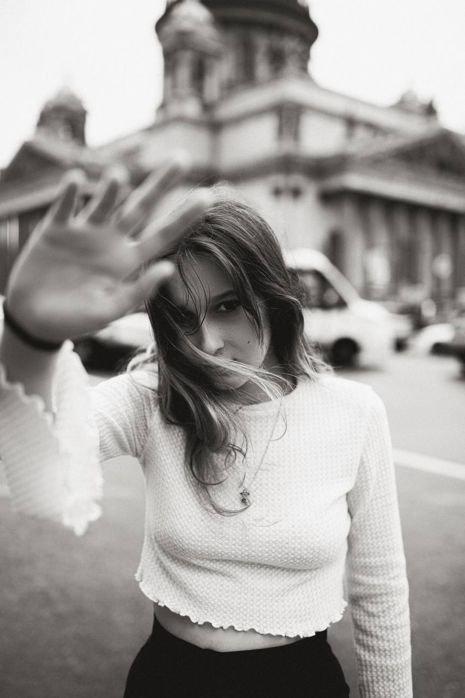
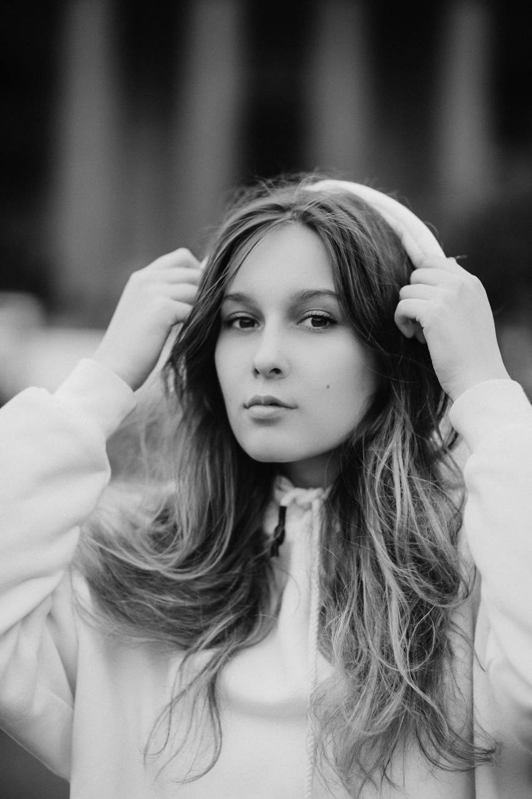

Аbout me


Следуя этим советам я стала фотографом
«Главное — это быть собой и действительно
интересоваться тем, что вы фотографируете.
Когда речь заходит о создании своего портфолио, вам
нужно фотографировать то, что вам нравится и о чем вы сможете поговорить с другими.
Ваши фотографии — отражение вашего видения мира.
Посыл в фотографии очень важен, а наличие
визуальной эстетики станет хорошим дополнением к этому.
«Выйдите из дома и начните фотографировать.
В первые несколько месяцев я по большей части фотографировала друзей.
Я просила друзей о фото и все больше влюблялась в фотографию.
Это хороший способ выучить основы, потому что ты не чувствуешь себя неловко,
когда чего-то не знаешь или не умеешь, тратишь вечность на создание
фотографии или говоришь им, что задумка не удалась.
Думаю, именно благодаря фотосъемке друзей и экспериментам я стала чувствовать себя увереннее».